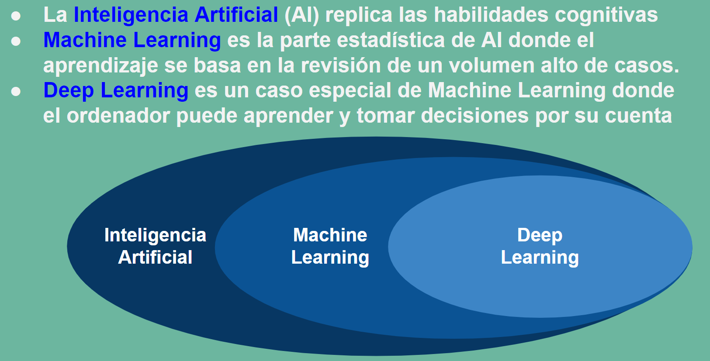
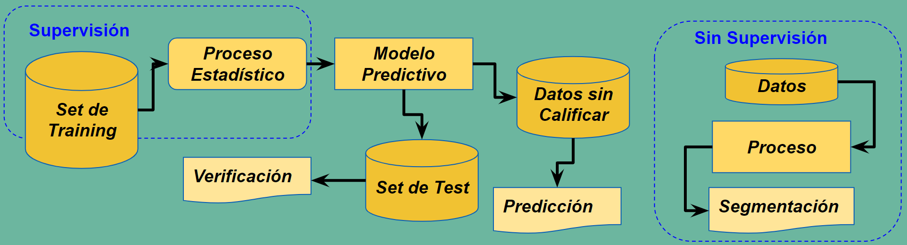

Introducción al Aprendizaje Automático#
import matplotlib.pyplot as plt
%matplotlib inline
import pandas as pd
import numpy as np
#from skimage import io
from IPython import display
import sklearn as sk
La asignatura de Aprendizaje Automático es un compendio de nuevas técnicas de análisis de datos avanzados que de la mano de la estadística y de los avances de la programación han abierto un nuevo horizonte en campos hasta ese momento vedados al análisis.
Uno de esos campos es sin lugar a duda los campos de la biología, que por la complejidad de sus modelos se encontraba fuera de muchos de los avances que la física matemática había aplicado a otros campos de la ingeniería como la electrotecnia y electrónica, la termodinámica o la mecánica de materiales por ejemplo.
Pero incluso los modelos informáticos inspirados en procesos biológicos se han constituido en herramientas de propósito general para construir los esquemas de trabajo, caso de las redes neuronales, o resolver problemas generales, caso de la aplicación de los algoritmos genéticos a la solución de problemas generales de optimización.
{kind=link}
Aprendizaje supervisado vs no supervisado. Regresión vs Clasificación#
El Aprendizaje Automático hace referencia a la preparación de un modelo entrenado estadisticamente donde se correlacionan unas observaciones, llamadas \(X\) con una variable objetivo llamada \(Y\). Durante el entrenamiento se construye un modelo que relaciona las observaciones recogidas en el conjunto \(X\) con la variable recogida en el conjunto \(Y\), que son observaciones reales conocidas de antemano.
Una vez ajustado el modelo servirá para predecir valores \(Y\), objetivos desconocidos, sobre un conjunto de nuevas observaciones \(X\). Esto es lo que se denomina aprendizaje supervisado, porque en el entrenamiento el disponer de objetivos conocidos \(Y\) de unas observaciones \(X\) permite supervisar el entrenamiento.
Finalmente hay casos en que ni siquiera conocemos ninguna variable objetivo. Simplemente nos piden que establezcamos una clasificación, (buena, regular, mala) por ejemplo, sobre un conjunto de observaciones de las que no tenemos experiencia previa. En estos casos estaremos hablando de aprendizaje no supervisado. Se aplicarán métodos que permiten hacer clasificaciones genéricas no condicionadas por una experiencia previa.
En el aprendizaje supervisado podemos encontrarnos con que los valores \(Y\) sean continuos, cualquier valor de los números reales. En este caso los métodos supervisados a aplicar son las Regresiones. Mientras que si \(Y\) toma sólo un conjunto discreto de valores, supongamos \( \{0, 1, 2, ..., k\} \) hablamos de métodos de Clasificación. Resumiendo una primera clasificación del Aprendizaje Automático puede ser:
Aprendizaje Supervisado. Cuando el modelo se ajusta a partir de valores conocidos \(X\) e \(Y\)
Regresiones. Cuando los valores que toman \(Y\) son continuos
Clasificaciones. Cuando los valores que toman \(Y\) son discretos
Aprendizaje no Supervisado. Cuando partimos de valores \(X\) para ajustar un modelo.
{kind=link}
Las matrices \(X\) e \(Y\)#
Un conjunto de características \(X\) se puede definir como una matriz de \(N\) filas y \(n\) columnas. Las \(N\) filas hacen referencia al numero de observaciones registradas o número de individuos de la muestra de partida o entrenamiento. Mientras que \(n\) es el número de características observadas y hace referencia a la dimensión de las observaciones. En cada individuo del conjunto recogemos \(n\) caracteristicas distintas. Si estamos haciendo un estudio médico sobre 1.000 individuos, \(N=1.000\) y si a cada individuo le medimos la presión arterial, el nivel de glucosa y el nivel de colesterol, \(n=3\). Podremos recoger los datos de nuestro conjunto de entrenamiento en una matriz \(1.000 \times 3\).
Si el estudio médico es un modelo supervisado las variables objetivo \(Y\) que permiten entrenar el modelo se pueden definir como una matriz columna de \(N\) filas o una matriz \(N \times 1\)
Los conjuntos de entrenamiento y validación, train y test, en el aprendizaje automático#
El ajuste del modelo estadistico de un método supervisado se realiza sobre una parte de los conjuntos \(X\) e \(Y\) de partida. Se hace una partición tanto de \(X\) como de \(Y\) en dos subconjuntos. El primero, que se denomina de entranamiento o train se utiliza para hacer realmente el ajuste del modelo. Y este ajuste se valida en el subconjunto que se ha reservado a tal fin y al que se da el nombre de conjunto de test o validación.
Esto es así porque los métodos de ajuste pueden conseguir una convergencia sobre el conjunto de entrenamiento que sea ficticia, lo que se llama sobreajuste, y luego al validar se comprueba que el ratio de éxito es muchísimo menor. Esto puede ser así porque realmente el modelo no tenga convergencia o correlación real.
{kind=link}
Tratamiento de los Datos#
Antes de empezar a aplicar ningún método entrenamiento es necesario cargar los datos desde el soporte de archivos o base de datos donde se encuentren. Aquí se cargarán desde archivos que se esperan en la carpeta data utilizando la librería Pandas.
Una vez cargado es necesario un proceso de filtrado y depuración para que sea compatible con los procedimientos que se van a aplicar. Así será necesario eliminar valores nulos o convertir valores alfabéticos en númericos.
Gestionar los datos nulos o datos perdidos se puede realizar con diferentes extrategias:
Descartar los registros incompletos.
Imputar un dato por cada valor perdido reemplazando por la media o la mediana.
Imputar en base a una regresión, donde el dato perdido se sustituye por uno predicho.
Además puede surgir la necesidad de transformar los datos:
Estandarización : restando la media \(\mu_i\) y dividiendo por la desviación típica \(\sigma_i\) en cada una de las \(i\) columnas de la matriz \(X\) con \(i=1,...,n\).
Convertir datos alfabéticos en númericos. Por ejemplo en la matriz \(Y\) se sustituyen los nombres de las etiquetas por enteros \(0, 1, ..., K\).
Finalmente puede ser de interés hacer un análisis de componentes principales (PCA) en la matriz \(X\).
Eliminación de Nulos#
El archivo breast_cancer_conNulos.csv contiene datos con valores nulos en algunas de sus características. La variable objetivo y es diagnose con valores 0 (benigno, no canceroso) o 1 (maligno, canceroso), respectivamente. El resto de variables son características que constituyen la matriz X.
Realizar lo siguiente:
Cargar con Pandas el archivo.
Evaluar si existen valores nulos o perdidos
Eliminar en Pandas los valores nulos.
Cargar las matrices X e y
Primero se comienza cargando desde la librería Pandas los datos del fichero a un objeto DataFrame. Ésto lo realiza la función read_csv que lee el fichero CSV.
https://pandas.pydata.org/docs/index.html
https://pandas.pydata.org/docs/reference/api/pandas.DataFrame.html
Los valores perdidos se pueden detectar y eliminar desde el objeto DataFrame con los métodos isna() y dropnan() respectivamente.
import pandas as pd
df = pd.read_csv('data/breast_cancer_conNulos.csv')
df.head()
| clump_thickness | cell_size_uniformity | cell_shape_uniformity | marginal_adhesion | single_epithelial_cell_size | bare_nuclei | bland_chromatin | normal_nucleoli | mitoses | diagnose | |
|---|---|---|---|---|---|---|---|---|---|---|
| 0 | 5.0 | 1.0 | 1.0 | 1.0 | 2.0 | 1.0 | 3.0 | 1.0 | 1.0 | 0 |
| 1 | 5.0 | 4.0 | 4.0 | 5.0 | 7.0 | 10.0 | 3.0 | 2.0 | 1.0 | 0 |
| 2 | 3.0 | 1.0 | 1.0 | 1.0 | 2.0 | 2.0 | 3.0 | 1.0 | 1.0 | 0 |
| 3 | 6.0 | 8.0 | 8.0 | 1.0 | 3.0 | 4.0 | 3.0 | 7.0 | 1.0 | 0 |
| 4 | 4.0 | 1.0 | 1.0 | 3.0 | 2.0 | 1.0 | 3.0 | 1.0 | 1.0 | 0 |
Se detectan si existen o no valores perdidos o nulos
Los registros con nulos aparecen arriba y con True.
df.isna()
| clump_thickness | cell_size_uniformity | cell_shape_uniformity | marginal_adhesion | single_epithelial_cell_size | bare_nuclei | bland_chromatin | normal_nucleoli | mitoses | diagnose | |
|---|---|---|---|---|---|---|---|---|---|---|
| 0 | False | False | False | False | False | False | False | False | False | False |
| 1 | False | False | False | False | False | False | False | False | False | False |
| 2 | False | False | False | False | False | False | False | False | False | False |
| 3 | False | False | False | False | False | False | False | False | False | False |
| 4 | False | False | False | False | False | False | False | False | False | False |
| ... | ... | ... | ... | ... | ... | ... | ... | ... | ... | ... |
| 683 | False | True | True | False | False | True | False | True | True | False |
| 684 | True | True | False | False | False | False | False | True | True | False |
| 685 | True | False | True | False | False | False | True | False | True | False |
| 686 | True | False | False | True | False | False | True | False | True | False |
| 687 | False | True | False | False | True | False | False | True | False | False |
688 rows × 10 columns
Se borran los valores nulos
df=df.dropna()
df
| clump_thickness | cell_size_uniformity | cell_shape_uniformity | marginal_adhesion | single_epithelial_cell_size | bare_nuclei | bland_chromatin | normal_nucleoli | mitoses | diagnose | |
|---|---|---|---|---|---|---|---|---|---|---|
| 0 | 5.0 | 1.0 | 1.0 | 1.0 | 2.0 | 1.0 | 3.0 | 1.0 | 1.0 | 0 |
| 1 | 5.0 | 4.0 | 4.0 | 5.0 | 7.0 | 10.0 | 3.0 | 2.0 | 1.0 | 0 |
| 2 | 3.0 | 1.0 | 1.0 | 1.0 | 2.0 | 2.0 | 3.0 | 1.0 | 1.0 | 0 |
| 3 | 6.0 | 8.0 | 8.0 | 1.0 | 3.0 | 4.0 | 3.0 | 7.0 | 1.0 | 0 |
| 4 | 4.0 | 1.0 | 1.0 | 3.0 | 2.0 | 1.0 | 3.0 | 1.0 | 1.0 | 0 |
| ... | ... | ... | ... | ... | ... | ... | ... | ... | ... | ... |
| 678 | 3.0 | 1.0 | 1.0 | 1.0 | 3.0 | 2.0 | 1.0 | 1.0 | 1.0 | 0 |
| 679 | 2.0 | 1.0 | 1.0 | 1.0 | 2.0 | 1.0 | 1.0 | 1.0 | 1.0 | 0 |
| 680 | 5.0 | 10.0 | 10.0 | 3.0 | 7.0 | 3.0 | 8.0 | 10.0 | 2.0 | 1 |
| 681 | 4.0 | 8.0 | 6.0 | 4.0 | 3.0 | 4.0 | 10.0 | 6.0 | 1.0 | 1 |
| 682 | 4.0 | 8.0 | 8.0 | 5.0 | 4.0 | 5.0 | 10.0 | 4.0 | 1.0 | 1 |
683 rows × 10 columns
Extraer las matrices X e y
El DataFrame tiene la variable values o el método to_numpy() para volcar la información a un array de doble dimensión.
La matriz X está formada por las 9 primeras columnas y la y es la columna 9. Se pueden extraer por posiciones:
X = df.to_numpy()[:, 0:9]
y = df.to_numpy()[:, 9]
X.shape, y.shape
((683, 9), (683,))
También se puede hacer usando los nombres de las columnas
columnX = df.columns[0:9]
columnY = df.columns[9]
print(columnX, columnY)
X = df[columnX].to_numpy()
#y = df[columnY].to_numpy()
y = df['diagnose'].to_numpy()
X.shape, y.shape
Index(['clump_thickness', 'cell_size_uniformity', 'cell_shape_uniformity',
'marginal_adhesion', 'single_epithelial_cell_size', 'bare_nuclei',
'bland_chromatin', 'normal_nucleoli', 'mitoses'],
dtype='object') diagnose
((683, 9), (683,))
Estandarización de la matriz X#
from sklearn.preprocessing import StandardScaler
scaler = StandardScaler()
X_std = scaler.fit_transform(X)
df_std = pd.DataFrame(X_std, columns = columnX)
df_std.head()
| clump_thickness | cell_size_uniformity | cell_shape_uniformity | marginal_adhesion | single_epithelial_cell_size | bare_nuclei | bland_chromatin | normal_nucleoli | mitoses | |
|---|---|---|---|---|---|---|---|---|---|
| 0 | 0.197905 | -0.702212 | -0.741774 | -0.639366 | -0.555608 | -0.698853 | -0.181827 | -0.612927 | -0.3484 |
| 1 | 0.197905 | 0.277252 | 0.262783 | 0.758032 | 1.695166 | 1.772867 | -0.181827 | -0.285105 | -0.3484 |
| 2 | -0.511643 | -0.702212 | -0.741774 | -0.639366 | -0.555608 | -0.424217 | -0.181827 | -0.612927 | -0.3484 |
| 3 | 0.552679 | 1.583204 | 1.602192 | -0.639366 | -0.105454 | 0.125054 | -0.181827 | 1.354008 | -0.3484 |
| 4 | -0.156869 | -0.702212 | -0.741774 | 0.059333 | -0.555608 | -0.698853 | -0.181827 | -0.612927 | -0.3484 |
Análisis de Componentes Principales#
Dado un conjunto de \(N\) observaciones con \(n\) características, cuya información está contenida en una matriz X es posible proyectar los datos de todas las observaciones sobre una dirección que maximice la varianza. Esta dirección se denomina componente principal y al maximizar la varianza es la que mejor explica todo el conjunto en una única dimensión.
Como se puede ver en el siguiente gráfico, la recta con la componente principal, en color azul, además de maximizar la varianza, minimiza la distancia a todas las observaciones. En color amarillo, aparece la segunda componente principal, ortogonal a la anterior.
Las direcciones principales se obtienen a partir de los autovectores \(u_i\), ordenados por autovalor \(\lambda_i\) de la matriz de covarianza \(S\) de la matriz de características \(X\):
Show code cell content
from sklearn.datasets import make_blobs
from sklearn.decomposition import PCA
def getOrdenadaRecta(vDir, Pto, lstX):
return [ Pto[1] + (vDir[1]/vDir[0])*(x - Pto[0]) for x in lstX]
def mostrarGrafica():
## Se genera un conjunto aleatorio
X, y = make_blobs(n_samples=100, n_features=2, centers=[[1,1],[6,3]])
## Se obtienen las direcciones principales utilizando la clase PCA de sklearn
pca = PCA(n_components=None)
X_pca = pca.fit_transform(X)
Media = [np.sum(X[:,0])/len(X), np.sum(X[:,1])/len(X)]
x_c1 = np.linspace(min(X[:,0]), max(X[:,0]), 40) ## abscisas de la recta de la dirección principal 1ª
y_c1 = getOrdenadaRecta(pca.components_[0], Media, x_c1) ## ordenadas de la recta de la dirección principal 1ª
x_c2 = np.linspace(2, 5, 40) ## abscisas de la recta de la dirección principal 2ª
y_c2 = getOrdenadaRecta(pca.components_[1], Media, x_c2) ## ordenadas de la recta de la dirección principal 2ª
## Se dibuja el resultado
color = ['red', 'green']
marcas = ['*', 'o']
plt.figure(figsize=(7, 5), dpi=80)
for i in np.unique(y):
plt.scatter(X[y==i,0], X[y==i,1], c=color[i], alpha=0.5, marker=marcas[i])
plt.plot(x_c1, y_c1, "blue", label="PCA 1")
plt.plot(x_c2, y_c2, "yellow", label="PCA 2")
plt.legend(loc='upper left')
plt.axis('equal')
plt.show()
mostrarGrafica()
Utilidad del método de Componentes Principales#
Representar en el plano un conjunto N-dimensional.
Extraer aquellas componentes que mejor explican el conjunto de forma y ejecutar los algoritmos sobre ellas.
Se muestra un ejemplo sobre el conjunto de flores IRIS. Es un conjunto que tiene 150 registros de 3 tipos de flores y 4 atributos (longitud y ancho de sépalo y pétalo).
Conjunto de Datos de Flor Iris (WikipediA)
from sklearn.datasets import load_iris
import pandas as pd
iris = load_iris()
df = pd.DataFrame(iris.data, columns=iris.feature_names)
df['target']=iris['target']
df.head()
| sepal length (cm) | sepal width (cm) | petal length (cm) | petal width (cm) | target | |
|---|---|---|---|---|---|
| 0 | 5.1 | 3.5 | 1.4 | 0.2 | 0 |
| 1 | 4.9 | 3.0 | 1.4 | 0.2 | 0 |
| 2 | 4.7 | 3.2 | 1.3 | 0.2 | 0 |
| 3 | 4.6 | 3.1 | 1.5 | 0.2 | 0 |
| 4 | 5.0 | 3.6 | 1.4 | 0.2 | 0 |
from sklearn.decomposition import PCA
X = df.to_numpy()[:,0:4]
y = df.to_numpy()[:,4]
pca = PCA(n_components=None)
X_pca = pca.fit_transform(X)
Varianzas=pca.explained_variance_ratio_
Varianzas
array([0.92461872, 0.05306648, 0.01710261, 0.00521218])
En el siguiente gráfico se muestra la varianza que explica cada dirección principal y la varianza acumulada al elegir las primeras k direcciones principales.
var_exp = pca.explained_variance_ratio_
tot = len(var_exp)
cum_var_exp = np.cumsum(var_exp)
import matplotlib.pyplot as plt
plt.bar(range(1,tot+1), var_exp, alpha=0.5, align='center',label='Varianza explicada inidividual')
plt.step(range(1,tot+1), cum_var_exp, where='mid',label='Varianza explicada acumulada')
plt.ylabel('Ratio de varianza explicada')
plt.xlabel('Indice de Característica Principal')
plt.legend(loc='best')
plt.show()
Se eligen 2 componentes y se proyecta y se representa sobre esas 2 componentes
pca = PCA(n_components=2)
X_pca = pca.fit_transform(X)
colors = ['r', 'b', 'g']
markers = ['s', 'x', 'o']
for l, c, m in zip(np.unique(y), colors, markers):
plt.scatter(X_pca[y==l, 0], X_pca[y==l, 1], c=c, label=l, marker=m)
plt.xlabel('PC 1')
plt.ylabel('PC 2')
plt.legend(loc='lower right')
plt.show()
El método de componentes principales no está dirigido a seleccionar las características de la matriz inicial X con más varianza, sino que permiten proyectar sobre un nuevo espacio K-dimensional eligiendo las dimensiones que garantizan un ratio de la varianza total.
Matriz de correlación y gráfico de dispersión entre características#
Aunque está más dirigido a los problemas de regresión entre variables continuas, es posible hacer un estudio de que caracteristicas se correlacionan mejor entre sí o bien a traves de la matriz de correlación o dibujando el gráfico de dispersión 2 a 2 de todas las características de X
Por ejemplo en el conjunto Iris la matriz de correlación entre las 4 características de la matriz X y el grafico de dispersión entre las características es:
df_cov = pd.DataFrame(np.corrcoef(X.T), columns=iris.feature_names)
df_cov.insert(loc=0, column='Correlación', value=iris.feature_names)
df_cov
| Correlación | sepal length (cm) | sepal width (cm) | petal length (cm) | petal width (cm) | |
|---|---|---|---|---|---|
| 0 | sepal length (cm) | 1.000000 | -0.117570 | 0.871754 | 0.817941 |
| 1 | sepal width (cm) | -0.117570 | 1.000000 | -0.428440 | -0.366126 |
| 2 | petal length (cm) | 0.871754 | -0.428440 | 1.000000 | 0.962865 |
| 3 | petal width (cm) | 0.817941 | -0.366126 | 0.962865 | 1.000000 |
Gráfico de dispersión entre características
axes=pd.plotting.scatter_matrix(df[iris.feature_names], figsize=(12,9))